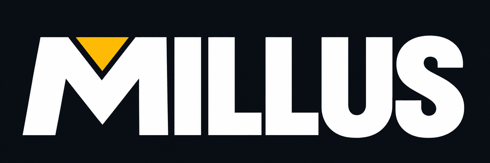
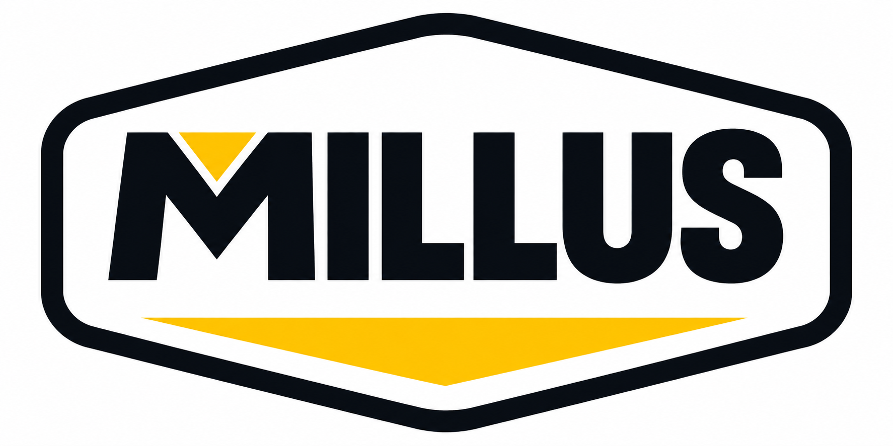
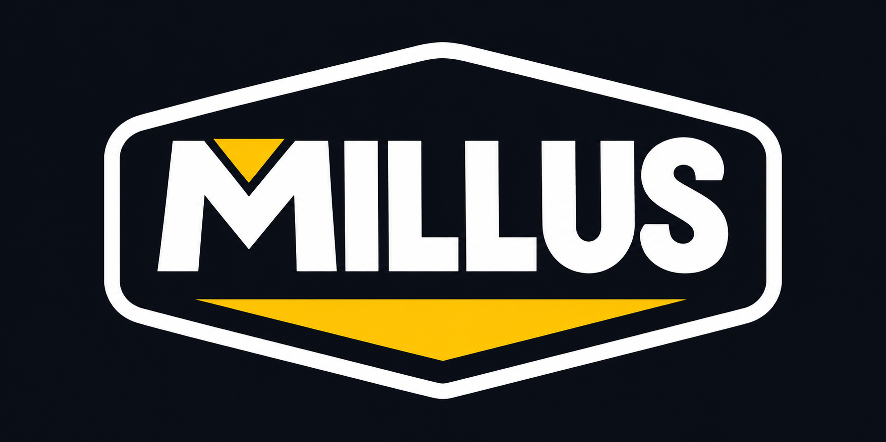
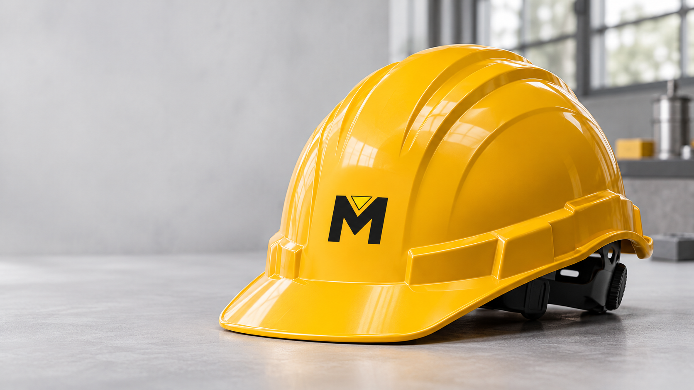
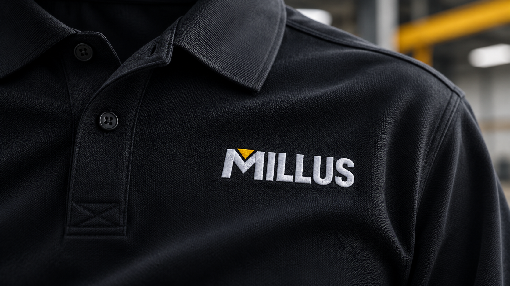
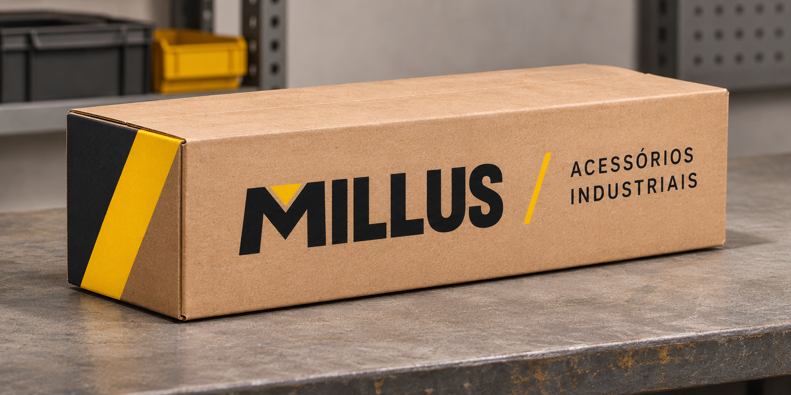
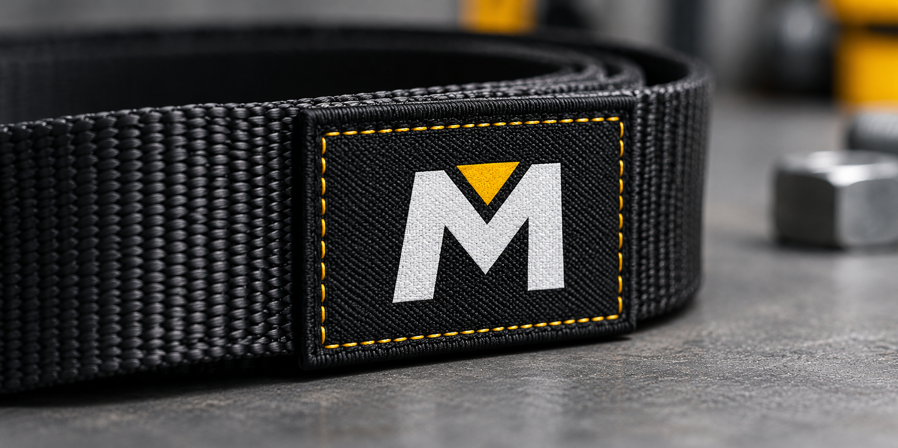
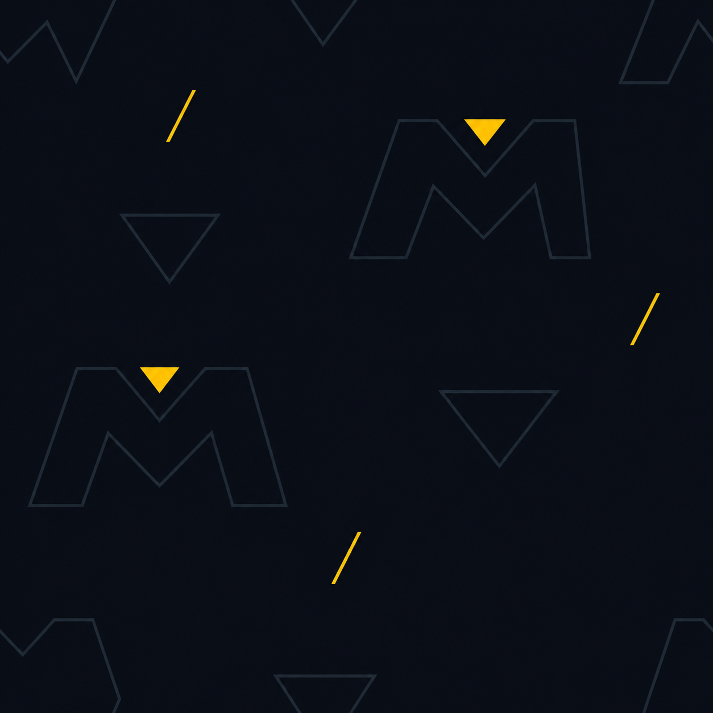
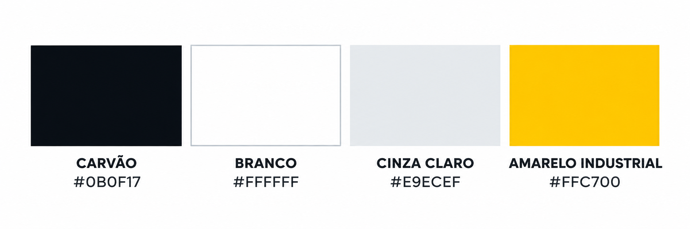
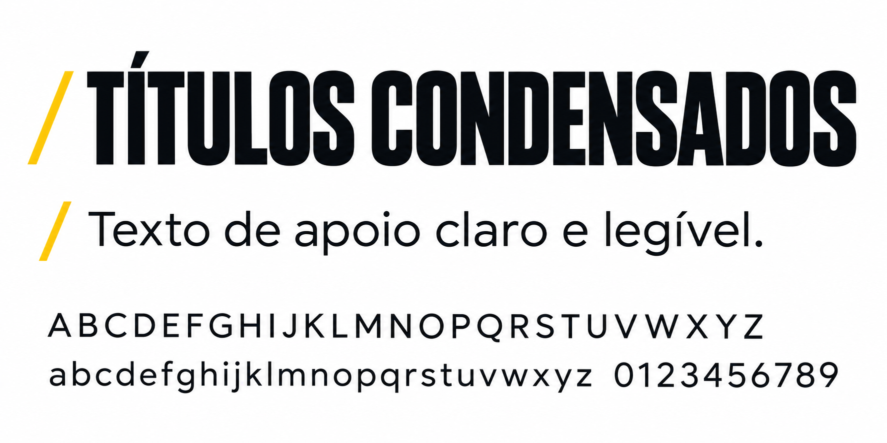

Biblioteca de identidade visual · 19 imagens recriadas a partir da referência. Logos, símbolos, emblemas e aplicações em arquivos separados.
2172 × 724 · PNG · Fundo transparente

2172 × 724 · PNG · Fundo escuro
1254 × 1254 · PNG · Fundo claro
1254 × 1254 · PNG · Fundo escuro
1254 × 1254 · PNG · Fundo transparente

1774 × 887 · PNG · Fundo claro

1774 × 887 · PNG · Fundo escuro

1672 × 941 · PNG · Fundo fotográfico


1774 × 887 · PNG · Fundo fotográfico



2172 × 724 · PNG · Fundo claro
